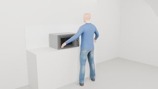
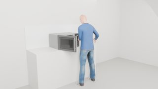
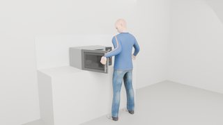
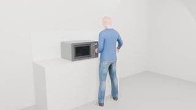
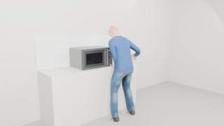
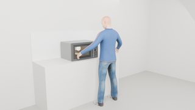
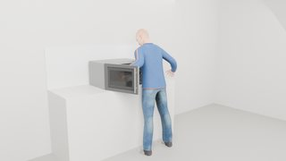

Rendered 3D simulation of a human operating household devices. One recorded run per task, filmed by three synchronized cameras; the pressed keys move by simulated contact (MuJoCo), the rest of the motion is authored and solved by IK.
Tasks and videos
One block per task: the three camera videos of its recorded run (external, first-person, hand close-up), the phases it consists of, the step timeline and the key contacts measured in MuJoCo. Click a timeline bar or a keyframe to jump the videos there.
microwave_v2
procedural, this project 4 tasks · 12 videos · 24 movable parts
microwave_v2_cook microwave_v2 · 58.8 s · 49 steps · hands: left, right 3/3 key presses contact-tested ✓ cooking with the procedural microwave_v2 (Samsung-style panel)
microwave_v2_cook · external camera · 58.8 smicrowave_v2_cook · first-person camera · 58.8 smicrowave_v2_cook · hand close-up camera · 58.8 s
▶ play all three pause ↺ restart
settle pull door move bowl → cavity_place_right push door press key_microwave rotate dial press key_start_30s wait · display, interior_light, turntable press key_stop_eco pull door move bowl → home: bowl
gaze left hand right hand body device 0s 5s 10s 15s 20s 25s 30s 35s 40s 45s 50s 55s settle · idle · 0.0–1.0 s · kinematic look_door · look_at · 1.0–1.6 s · kinematic reach_handle · reach left · 1.0–3.0 s · kinematic grasp_handle · pregrasp left · 3.0–3.7 s · kinematic open_door · pull left · 3.7–5.9 s · assisted_grasp release_door · release left · 5.9–6.5 s · kinematic left_back_1 · retreat left · 6.5–7.9 s · kinematic look_bowl · look_at · 7.9–8.5 s · kinematic place_bowl · pick_place left · 7.9–13.9 s · assisted_grasp place_bowl left_back_2 · retreat left · 13.9–15.3 s · kinematic look_door_2 · look_at · 15.3–15.9 s · kinematic reach_handle_2 · reach left · 15.3–17.2 s · kinematic grasp_handle_2 · pregrasp left · 17.2–18.0 s · kinematic close_door · push left · 18.0–20.0 s · assisted_grasp release_door_2 · release left · 20.0–20.5 s · kinematic left_back_3 · retreat left · 20.5–21.7 s · kinematic look_mode · look_at · 21.7–22.3 s · kinematic reach_mode · reach right · 21.7–23.2 s · kinematic align_mode · pregrasp right · 23.2–23.9 s · kinematic press_mode · press right · 23.9–24.6 s · contact_dynamics release_mode · release right · 24.6–25.1 s · kinematic look_dial · look_at · 25.1–25.6 s · kinematic reach_dial · reach right · 25.1–26.4 s · kinematic pinch_dial · pregrasp right · 26.4–27.1 s · kinematic turn_dial · rotate right · 27.1–28.3 s · assisted_grasp release_dial · release right · 28.3–28.8 s · kinematic look_start · look_at · 28.8–29.3 s · kinematic reach_start · reach right · 28.8–30.1 s · kinematic align_start · pregrasp right · 30.1–30.8 s · kinematic press_start · press right · 30.8–31.5 s · contact_dynamics release_start · release right · 31.5–32.0 s · kinematic right_back_1 · retreat right · 32.0–33.4 s · kinematic cook · idle · 33.4–38.4 s · kinematic cook look_stop · look_at · 38.4–38.9 s · kinematic reach_stop · reach right · 38.4–39.8 s · kinematic align_stop · pregrasp right · 39.8–40.4 s · kinematic press_stop · press right · 40.4–41.1 s · contact_dynamics release_stop · release right · 41.1–41.6 s · kinematic right_back_2 · retreat right · 41.6–43.0 s · kinematic look_door_3 · look_at · 43.0–43.6 s · kinematic reach_handle_3 · reach left · 43.0–45.0 s · kinematic grasp_handle_3 · pregrasp left · 45.0–45.7 s · kinematic reopen_door · pull left · 45.7–47.9 s · assisted_grasp release_door_3 · release left · 47.9–48.5 s · kinematic left_back_4 · retreat left · 48.5–49.9 s · kinematic look_cavity · look_at · 49.9–50.5 s · kinematic take_bowl · pick_place left · 49.9–55.9 s · assisted_grasp take_bowl left_back_5 · retreat left · 55.9–57.3 s · kinematic end · idle · 57.3–58.8 s · kinematic display · illustrative_effect display interior_light · illustrative_effect interior_light turntable · device_motor turntable contact_start @ 24.19 s (key_microwave, measured) button_activated @ 24.23 s (key_microwave, measured) button_released @ 24.69 s (key_microwave, measured) contact_end @ 24.69 s (key_microwave, measured) contact_start @ 31.09 s (key_start_30s, measured) button_activated @ 31.13 s (key_start_30s, measured) button_released @ 31.59 s (key_start_30s, measured) contact_end @ 31.59 s (key_start_30s, measured) contact_start @ 40.69 s (key_stop_eco, measured) button_activated @ 40.73 s (key_stop_eco, measured) button_released @ 41.19 s (key_stop_eco, measured) contact_end @ 41.19 s (key_stop_eco, measured) 0.4 s · settle 3.8 s · pull door 10.9 s · move bowl → cavity_place_right 17.9 s · push door 23.1 s · press key_microwave 26.6 s · rotate dial 30.6 s · press key_start_30s 35.4 s · wait · display, interior_light, turntable 40.2 s · press key_stop_eco 45.8 s · pull door 53.5 s · move bowl → home: bowl
microwave_v2_defrost microwave_v2 · 57.0 s · 43 steps · hands: left, right 2/2 key presses contact-tested ✓ power defrost with microwave_v2
microwave_v2_defrost · external camera · 57.0 smicrowave_v2_defrost · first-person camera · 57.0 smicrowave_v2_defrost · hand close-up camera · 57.0 s
▶ play all three pause ↺ restart
settle pull door move bowl → cavity_place_right push door press key_power_defrost rotate dial press key_start_30s wait · display, interior_light, turntable pull door move bowl → home: bowl
gaze left hand right hand body device 0s 5s 10s 15s 20s 25s 30s 35s 40s 45s 50s 55s settle · idle · 0.0–1.0 s · kinematic look_door · look_at · 1.0–1.6 s · kinematic reach_handle · reach left · 1.0–3.0 s · kinematic grasp_handle · pregrasp left · 3.0–3.7 s · kinematic open_door · pull left · 3.7–5.9 s · assisted_grasp release_door · release left · 5.9–6.5 s · kinematic left_back_1 · retreat left · 6.5–7.9 s · kinematic look_bowl · look_at · 7.9–8.5 s · kinematic place_bowl · pick_place left · 7.9–13.9 s · assisted_grasp place_bowl left_back_2 · retreat left · 13.9–15.3 s · kinematic look_door_2 · look_at · 15.3–15.9 s · kinematic reach_handle_2 · reach left · 15.3–17.2 s · kinematic grasp_handle_2 · pregrasp left · 17.2–18.0 s · kinematic close_door · push left · 18.0–20.0 s · assisted_grasp release_door_2 · release left · 20.0–20.5 s · kinematic left_back_3 · retreat left · 20.5–21.7 s · kinematic look_defrost · look_at · 21.7–22.3 s · kinematic reach_defrost · reach right · 21.7–23.2 s · kinematic align_defrost · pregrasp right · 23.2–23.9 s · kinematic press_defrost · press right · 23.9–24.6 s · contact_dynamics release_defrost · release right · 24.6–25.1 s · kinematic look_dial · look_at · 25.1–25.6 s · kinematic reach_dial · reach right · 25.1–26.4 s · kinematic pinch_dial · pregrasp right · 26.4–27.1 s · kinematic turn_dial · rotate right · 27.1–28.1 s · assisted_grasp release_dial · release right · 28.1–28.6 s · kinematic look_start · look_at · 28.6–29.1 s · kinematic reach_start · reach right · 28.6–29.9 s · kinematic align_start · pregrasp right · 29.9–30.6 s · kinematic press_start · press right · 30.6–31.3 s · contact_dynamics release_start · release right · 31.3–31.8 s · kinematic right_back_1 · retreat right · 31.8–33.2 s · kinematic defrost · idle · 33.2–41.2 s · kinematic defrost look_door_3 · look_at · 41.2–41.8 s · kinematic reach_handle_3 · reach left · 41.2–43.1 s · kinematic grasp_handle_3 · pregrasp left · 43.1–43.9 s · kinematic reopen_door · pull left · 43.9–46.1 s · assisted_grasp release_door_3 · release left · 46.1–46.7 s · kinematic left_back_4 · retreat left · 46.7–48.1 s · kinematic look_cavity · look_at · 48.1–48.7 s · kinematic take_bowl · pick_place left · 48.1–54.1 s · assisted_grasp take_bowl left_back_5 · retreat left · 54.1–55.5 s · kinematic end · idle · 55.5–57.0 s · kinematic display · illustrative_effect display interior_light · illustrative_effect interior_light turntable · device_motor turntable contact_start @ 24.19 s (key_power_defrost, measured) button_activated @ 24.23 s (key_power_defrost, measured) button_released @ 24.69 s (key_power_defrost, measured) contact_end @ 24.69 s (key_power_defrost, measured) contact_start @ 30.89 s (key_start_30s, measured) button_activated @ 30.93 s (key_start_30s, measured) button_released @ 31.39 s (key_start_30s, measured) contact_end @ 31.39 s (key_start_30s, measured) 0.4 s · settle 3.8 s · pull door 10.9 s · move bowl → cavity_place_right 17.9 s · push door 23.1 s · press key_power_defrost 26.5 s · rotate dial 30.4 s · press key_start_30s 36.4 s · wait · display, interior_light, turntable 44.0 s · pull door 51.7 s · move bowl → home: bowl
microwave_v2_reheat microwave_v2 · 49.9 s · 36 steps · hands: left, right 2/2 key presses contact-tested ✓ quick reheat of a drink with microwave_v2
microwave_v2_reheat · external camera · 50.0 smicrowave_v2_reheat · first-person camera · 50.0 smicrowave_v2_reheat · hand close-up camera · 50.0 s
▶ play all three pause ↺ restart
settle pull door move mug → cavity_place_right push door press key_start_30s wait · display, interior_light, turntable pull door move mug → home: mug
gaze left hand right hand body device 0s 5s 10s 15s 20s 25s 30s 35s 40s 45s settle · idle · 0.0–1.0 s · kinematic look_door · look_at · 1.0–1.6 s · kinematic reach_handle · reach left · 1.0–3.0 s · kinematic grasp_handle · pregrasp left · 3.0–3.7 s · kinematic open_door · pull left · 3.7–5.9 s · assisted_grasp release_door · release left · 5.9–6.5 s · kinematic left_back_1 · retreat left · 6.5–7.9 s · kinematic look_mug · look_at · 7.9–8.5 s · kinematic place_mug · pick_place left · 7.9–13.9 s · assisted_grasp place_mug left_back_2 · retreat left · 13.9–15.3 s · kinematic look_door_2 · look_at · 15.3–15.9 s · kinematic reach_handle_2 · reach left · 15.3–17.2 s · kinematic grasp_handle_2 · pregrasp left · 17.2–18.0 s · kinematic close_door · push left · 18.0–20.0 s · assisted_grasp release_door_2 · release left · 20.0–20.5 s · kinematic left_back_3 · retreat left · 20.5–21.7 s · kinematic look_start · look_at · 21.7–22.3 s · kinematic reach_start · reach right · 21.7–23.2 s · kinematic align_start · pregrasp right · 23.2–23.9 s · kinematic press_start_1 · press right · 23.9–24.6 s · contact_dynamics lift_1 · release right · 24.6–25.0 s · kinematic align_start_2 · pregrasp right · 25.0–25.5 s · kinematic press_start_2 · press right · 25.5–26.2 s · contact_dynamics release_start · release right · 26.2–26.7 s · kinematic right_back_1 · retreat right · 26.7–28.1 s · kinematic heat · idle · 28.1–34.1 s · kinematic heat look_door_3 · look_at · 34.1–34.7 s · kinematic reach_handle_3 · reach left · 34.1–36.1 s · kinematic grasp_handle_3 · pregrasp left · 36.1–36.8 s · kinematic reopen_door · pull left · 36.8–39.0 s · assisted_grasp release_door_3 · release left · 39.0–39.6 s · kinematic left_back_4 · retreat left · 39.6–41.0 s · kinematic look_cavity · look_at · 41.0–41.6 s · kinematic take_mug · pick_place left · 41.0–47.0 s · assisted_grasp take_mug left_back_5 · retreat left · 47.0–48.4 s · kinematic end · idle · 48.4–49.9 s · kinematic display · illustrative_effect display interior_light · illustrative_effect interior_light turntable · device_motor turntable contact_start @ 24.19 s (key_start_30s, measured) button_activated @ 24.23 s (key_start_30s, measured) button_released @ 24.67 s (key_start_30s, measured) contact_end @ 24.69 s (key_start_30s, measured) contact_start @ 25.84 s (key_start_30s, measured) button_activated @ 25.88 s (key_start_30s, measured) button_released @ 26.34 s (key_start_30s, measured) contact_end @ 26.34 s (key_start_30s, measured) 0.4 s · settle 3.8 s · pull door 10.9 s · move mug → cavity_place_right 17.9 s · push door 24.3 s · press key_start_30s 30.5 s · wait · display, interior_light, turntable 36.9 s · pull door 44.6 s · move mug → home: mug
microwave_v2_set_clock microwave_v2 · 18.7 s · 23 steps · hands: right 3/3 key presses contact-tested ✓ set the clock on microwave_v2, panel only (no door, no prop)
microwave_v2_set_clock · external camera · 18.7 smicrowave_v2_set_clock · first-person camera · 18.7 smicrowave_v2_set_clock · hand close-up camera · 18.7 s
▶ play all three pause ↺ restart
settle press key_clock rotate dial wait · display
gaze left hand right hand body device 0s 5s 10s 15s settle · idle · 0.0–1.0 s · kinematic look_clock · look_at · 1.0–1.6 s · kinematic reach_clock · reach right · 1.0–2.8 s · kinematic reach_clock align_clock · pregrasp right · 2.8–3.4 s · kinematic press_clock · press right · 3.4–4.1 s · contact_dynamics release_clock · release right · 4.1–4.6 s · kinematic look_dial · look_at · 4.6–5.1 s · kinematic reach_dial · reach right · 4.6–5.9 s · kinematic reach_dial pinch_dial · pregrasp right · 5.9–6.6 s · kinematic turn_hours · rotate right · 6.6–7.8 s · assisted_grasp turn_hours release_dial · release right · 7.8–8.3 s · kinematic align_select · pregrasp right · 8.3–9.1 s · kinematic press_select · press right · 9.1–9.8 s · contact_dynamics release_select · release right · 9.8–10.2 s · kinematic reach_dial_2 · reach right · 10.2–11.2 s · kinematic pinch_dial_2 · pregrasp right · 11.2–11.8 s · kinematic turn_minutes · rotate right · 11.8–12.8 s · assisted_grasp release_dial_2 · release right · 12.8–13.3 s · kinematic align_select_2 · pregrasp right · 13.3–14.1 s · kinematic press_select_2 · press right · 14.1–14.8 s · contact_dynamics release_select_2 · release right · 14.8–15.3 s · kinematic right_back · retreat right · 15.3–16.7 s · kinematic right_back clock_set · idle · 16.7–18.7 s · kinematic clock_set display · illustrative_effect display contact_start @ 3.69 s (key_clock, measured) button_activated @ 3.73 s (key_clock, measured) button_released @ 4.19 s (key_clock, measured) contact_end @ 4.19 s (key_clock, measured) contact_start @ 9.34 s (dial_select, measured) button_activated @ 9.38 s (dial_select, measured) button_released @ 9.84 s (dial_select, measured) contact_end @ 9.84 s (dial_select, measured) contact_start @ 14.39 s (dial_select, measured) button_activated @ 14.43 s (dial_select, measured) button_released @ 14.89 s (dial_select, measured) contact_end @ 14.89 s (dial_select, measured) 0.4 s · settle 2.4 s · press key_clock 9.4 s · rotate dial 17.5 s · wait · display coffee_machine
procedural, this project 4 tasks · 12 videos · 12 movable parts
coffee_make_espresso coffee_machine · 59.4 s · 29 steps · hands: left, right 1/1 key presses contact-tested ✓ make a double espresso on the coffee_machine
coffee_make_espresso · external camera · 59.4 scoffee_make_espresso · first-person camera · 59.4 scoffee_make_espresso · hand close-up camera · 59.4 s
▶ play all three pause ↺ restart
settle move portafilter → cradle_rest wait · fx_grind move portafilter → home: portafilter move tamper → tamp_on_basket move portafilter → group_locked move cup → cup_place press btn_two_cup wait · fx_brew, gauge_needle, display move cup → home: cup
gaze left hand right hand body device 0s 5s 10s 15s 20s 25s 30s 35s 40s 45s 50s 55s settle · idle · 0.0–1.0 s · kinematic look_pf · look_at · 1.0–1.6 s · kinematic pf_to_cradle · pick_place right · 1.0–6.5 s · assisted_grasp pf_to_cradle right_back_1 · retreat right · 6.5–7.7 s · kinematic grind · idle · 7.7–11.7 s · kinematic grind look_cradle · look_at · 11.7–12.2 s · kinematic pf_to_counter · pick_place right · 11.7–16.7 s · assisted_grasp pf_to_counter right_back_2 · retreat right · 16.7–17.7 s · kinematic look_tamper · look_at · 17.7–18.2 s · kinematic tamp · pick_place right · 17.7–21.7 s · assisted_grasp tamp tamper_back · pick_place right · 21.7–25.2 s · assisted_grasp right_back_3 · retreat right · 25.2–26.2 s · kinematic look_group · look_at · 26.2–26.7 s · kinematic pf_to_group · pick_place right · 26.2–31.7 s · assisted_grasp pf_to_group right_back_4 · retreat right · 31.7–32.9 s · kinematic cup_under · pick_place left · 32.9–37.9 s · assisted_grasp cup_under look_cup · look_at · 32.9–33.4 s · kinematic left_back_1 · retreat left · 37.9–39.1 s · kinematic look_2cup · look_at · 39.1–39.6 s · kinematic reach_2cup · reach right · 39.1–40.6 s · kinematic align_2cup · pregrasp right · 40.6–41.3 s · kinematic press_2cup · press right · 41.3–42.0 s · contact_dynamics release_2cup · release right · 42.0–42.5 s · kinematic right_back_5 · retreat right · 42.5–43.7 s · kinematic extract · idle · 43.7–51.7 s · kinematic extract look_cup_2 · look_at · 51.7–52.2 s · kinematic take_cup · pick_place left · 51.7–56.7 s · assisted_grasp take_cup left_back_2 · retreat left · 56.7–57.9 s · kinematic end · idle · 57.9–59.4 s · kinematic fx_grind · illustrative_effect fx_grind display · illustrative_effect display fx_brew · illustrative_effect fx_brew gauge_needle · illustrative_effect gauge_needle contact_start @ 41.59 s (btn_two_cup, measured) button_activated @ 41.63 s (btn_two_cup, measured) button_released @ 42.09 s (btn_two_cup, measured) contact_end @ 42.10 s (btn_two_cup, measured) 0.4 s · settle 3.7 s · move portafilter → cradle_rest 9.3 s · wait · fx_grind 14.1 s · move portafilter → home: portafilter 21.1 s · move tamper → tamp_on_basket 28.9 s · move portafilter → group_locked 35.4 s · move cup → cup_place 40.9 s · press btn_two_cup 46.9 s · wait · fx_brew, gauge_needle, display 54.8 s · move cup → home: cup
coffee_program coffee_machine · 19.0 s · 24 steps · hands: right 4/4 key presses contact-tested ✓ power up and program a shot on the panel only
coffee_program · external camera · 19.0 scoffee_program · first-person camera · 19.0 scoffee_program · hand close-up camera · 19.0 s
▶ play all three pause ↺ restart
settle press btn_power wait · display press btn_filter_size press btn_program press btn_one_cup wait · display, gauge_needle
gaze left hand right hand body device 0s 5s 10s 15s settle · idle · 0.0–1.0 s · kinematic look_power · look_at · 1.0–1.6 s · kinematic reach_power · reach right · 1.0–2.8 s · kinematic reach_power align_power · pregrasp right · 2.8–3.4 s · kinematic press_power · press right · 3.4–4.1 s · contact_dynamics release_power · release right · 4.1–4.6 s · kinematic warm_up · idle · 4.6–6.6 s · kinematic warm_up look_filter · look_at · 6.6–7.1 s · kinematic reach_filter · reach right · 6.6–7.8 s · kinematic align_filter · pregrasp right · 7.8–8.4 s · kinematic press_filter · press right · 8.4–9.1 s · contact_dynamics release_filter · release right · 9.1–9.6 s · kinematic look_program · look_at · 9.6–10.1 s · kinematic reach_program · reach right · 9.6–10.8 s · kinematic align_program · pregrasp right · 10.8–11.4 s · kinematic press_program · press right · 11.4–12.1 s · contact_dynamics release_program · release right · 12.1–12.6 s · kinematic look_1cup · look_at · 12.6–13.1 s · kinematic reach_1cup · reach right · 12.6–13.8 s · kinematic align_1cup · pregrasp right · 13.8–14.4 s · kinematic press_1cup · press right · 14.4–15.1 s · contact_dynamics release_1cup · release right · 15.1–15.6 s · kinematic right_back · retreat right · 15.6–17.0 s · kinematic right_back programmed · idle · 17.0–19.0 s · kinematic programmed display · illustrative_effect display display · illustrative_effect display gauge_needle · illustrative_effect gauge_needle contact_start @ 3.69 s (btn_power, measured) button_activated @ 3.73 s (btn_power, measured) button_released @ 4.19 s (btn_power, measured) contact_end @ 4.20 s (btn_power, measured) contact_start @ 8.69 s (btn_filter_size, measured) button_activated @ 8.73 s (btn_filter_size, measured) button_released @ 9.19 s (btn_filter_size, measured) contact_end @ 9.20 s (btn_filter_size, measured) contact_start @ 11.69 s (btn_program, measured) button_activated @ 11.73 s (btn_program, measured) button_released @ 12.19 s (btn_program, measured) contact_end @ 12.20 s (btn_program, measured) contact_start @ 14.69 s (btn_one_cup, measured) button_activated @ 14.73 s (btn_one_cup, measured) button_released @ 15.19 s (btn_one_cup, measured) contact_end @ 15.20 s (btn_one_cup, measured) 0.4 s · settle 2.4 s · press btn_power 5.4 s · wait · display 7.8 s · press btn_filter_size 10.8 s · press btn_program 14.4 s · press btn_one_cup 17.8 s · wait · display, gauge_needle
coffee_setup coffee_machine · 21.2 s · 22 steps · hands: left, right set up the grinder and empty the drip tray
coffee_setup · external camera · 21.2 scoffee_setup · first-person camera · 21.2 scoffee_setup · hand close-up camera · 21.2 s
▶ play all three pause ↺ restart
settle rotate grind_size rotate grind_amount pull drip_tray
gaze left hand right hand body device 0s 5s 10s 15s 20s settle · idle · 0.0–1.0 s · kinematic look_gs · look_at · 1.0–1.6 s · kinematic reach_gs · reach left · 1.0–3.0 s · kinematic reach_gs pinch_gs · pregrasp left · 3.0–3.6 s · kinematic turn_gs · rotate left · 3.6–4.8 s · assisted_grasp release_gs · release left · 4.8–5.3 s · kinematic left_back_1 · retreat left · 5.3–6.5 s · kinematic look_ga · look_at · 6.5–7.0 s · kinematic reach_ga · reach right · 6.5–8.1 s · kinematic reach_ga pinch_ga · pregrasp right · 8.1–8.7 s · kinematic turn_ga · rotate right · 8.7–9.7 s · assisted_grasp release_ga · release right · 9.7–10.2 s · kinematic right_back_1 · retreat right · 10.2–11.4 s · kinematic look_tray · look_at · 11.4–11.9 s · kinematic reach_tray · reach left · 11.4–13.2 s · kinematic reach_tray grasp_tray · pregrasp left · 13.2–13.8 s · kinematic pull_tray · pull left · 13.8–15.4 s · assisted_grasp pull_tray hold_tray · idle · 15.4–16.4 s · kinematic push_tray · push left · 16.4–17.8 s · assisted_grasp push_tray release_tray · release left · 17.8–18.3 s · kinematic left_back_2 · retreat left · 18.3–19.7 s · kinematic left_back_2 end · idle · 19.7–21.2 s · kinematic end 0.4 s · settle 3.2 s · rotate grind_size 8.5 s · rotate grind_amount 15.3 s · pull drip_tray
coffee_steam_milk coffee_machine · 34.4 s · 27 steps · hands: right steam milk
coffee_steam_milk · external camera · 34.4 scoffee_steam_milk · first-person camera · 34.4 scoffee_steam_milk · hand close-up camera · 34.4 s
▶ play all three pause ↺ restart
settle rotate steam_wand move jug → jug_place rotate steam_dial wait · fx_steam, display rotate steam_dial move jug → jug_down
gaze left hand right hand body device 0s 5s 10s 15s 20s 25s 30s settle · idle · 0.0–1.0 s · kinematic look_wand · look_at · 1.0–1.6 s · kinematic reach_wand · reach right · 1.0–2.8 s · kinematic pinch_wand · pregrasp right · 2.8–3.4 s · kinematic swing_out · rotate right · 3.4–4.6 s · assisted_grasp release_wand · release right · 4.6–5.1 s · kinematic right_back_1 · retreat right · 5.1–6.3 s · kinematic jug_under · pick_place right · 6.3–10.8 s · assisted_grasp jug_under look_jug · look_at · 6.3–6.8 s · kinematic right_back_2 · retreat right · 10.8–11.8 s · kinematic look_dial · look_at · 11.8–12.3 s · kinematic reach_dial · reach right · 11.8–13.4 s · kinematic pinch_dial · pregrasp right · 13.4–14.0 s · kinematic steam_on · rotate right · 14.0–15.0 s · assisted_grasp release_dial · release right · 15.0–15.5 s · kinematic right_back_3 · retreat right · 15.5–16.5 s · kinematic steam · idle · 16.5–22.5 s · kinematic steam look_dial_2 · look_at · 22.5–23.0 s · kinematic reach_dial_2 · reach right · 22.5–24.1 s · kinematic pinch_dial_2 · pregrasp right · 24.1–24.7 s · kinematic steam_off · rotate right · 24.7–25.7 s · assisted_grasp release_dial_2 · release right · 25.7–26.2 s · kinematic right_back_4 · retreat right · 26.2–27.2 s · kinematic jug_back · pick_place right · 27.2–31.7 s · assisted_grasp jug_back look_jug_2 · look_at · 27.2–27.7 s · kinematic right_back_5 · retreat right · 31.7–32.9 s · kinematic end · idle · 32.9–34.4 s · kinematic display · illustrative_effect display fx_steam · illustrative_effect fx_steam 0.4 s · settle 3.1 s · rotate steam_wand 8.5 s · move jug → jug_place 13.7 s · rotate steam_dial 18.9 s · wait · fx_steam, display 24.4 s · rotate steam_dial 30.1 s · move jug → jug_down induction_range
procedural, this project 4 tasks · 12 videos · 2 movable parts
range_bake induction_range · 14.2 s · 14 steps · hands: left, right set the oven to bake
range_bake · external camera · 14.3 srange_bake · first-person camera · 14.3 srange_bake · hand close-up camera · 14.3 s
▶ play all three pause ↺ restart
settle press key_bake wait · display, interior_light
gaze left hand right hand body device 0s 5s 10s settle · idle · 0.0–1.0 s · kinematic settle look_bake · look_at · 1.0–1.6 s · kinematic reach_bake · reach left · 1.0–2.8 s · kinematic reach_bake align_bake · pregrasp left · 2.8–3.4 s · kinematic touch_bake · press left · 3.4–4.1 s · kinematic lift_bake · release left · 4.1–4.5 s · kinematic align_up · pregrasp right · 4.5–5.5 s · kinematic align_up touch_up_1 · press right · 5.5–6.0 s · kinematic lift_up_1 · release right · 6.0–6.3 s · kinematic touch_up_2 · press right · 6.3–6.8 s · kinematic release_up · release right · 6.8–7.3 s · kinematic right_back_1 · retreat right · 7.3–8.8 s · kinematic right_back_1 preheat · idle · 8.8–12.8 s · kinematic preheat end · idle · 12.8–14.2 s · kinematic end display · illustrative_effect display interior_light · illustrative_effect interior_light 0.4 s · settle 4.1 s · press key_bake 10.9 s · wait · display, interior_light
range_boil induction_range · 38.1 s · 28 steps · hands: left heat a saucepan on the induction range
range_boil · external camera · 38.1 srange_boil · first-person camera · 38.1 srange_boil · hand close-up camera · 38.1 s
▶ play all three pause ↺ restart
settle move saucepan → zone_fl press key_fl_onoff wait · fx_zone_fl, fx_steam_fl, display press key_fl_onoff move saucepan → home: saucepan
gaze left hand right hand body device 0s 5s 10s 15s 20s 25s 30s 35s settle · idle · 0.0–1.0 s · kinematic look_pan · look_at · 1.0–1.6 s · kinematic pan_to_zone · pick_place left · 1.0–7.0 s · assisted_grasp pan_to_zone left_back_0 · retreat left · 7.0–8.2 s · kinematic look_onoff · look_at · 8.2–8.8 s · kinematic reach_onoff · reach left · 8.2–9.9 s · kinematic align_onoff · pregrasp left · 9.9–10.6 s · kinematic touch_onoff · press left · 10.6–11.3 s · kinematic lift_onoff · release left · 11.3–11.7 s · kinematic align_plus · pregrasp left · 11.7–12.4 s · kinematic touch_plus_1 · press left · 12.4–13.0 s · kinematic lift_plus_1 · release left · 13.0–13.3 s · kinematic touch_plus_2 · press left · 13.3–13.9 s · kinematic lift_plus_2 · release left · 13.9–14.2 s · kinematic touch_plus_3 · press left · 14.2–14.7 s · kinematic release_plus · release left · 14.7–15.2 s · kinematic left_back_1 · retreat left · 15.2–16.6 s · kinematic heat · idle · 16.6–24.6 s · kinematic heat look_onoff_2 · look_at · 24.6–25.1 s · kinematic reach_onoff_2 · reach left · 24.6–26.2 s · kinematic align_onoff_2 · pregrasp left · 26.2–26.8 s · kinematic touch_off · press left · 26.8–27.5 s · kinematic release_off · release left · 27.5–28.0 s · kinematic left_back_2 · retreat left · 28.0–29.4 s · kinematic look_pan_2 · look_at · 29.4–29.9 s · kinematic pan_back · pick_place left · 29.4–35.4 s · assisted_grasp pan_back left_back_3 · retreat left · 35.4–36.6 s · kinematic end · idle · 36.6–38.1 s · kinematic display · illustrative_effect display fx_steam_fl · illustrative_effect fx_steam_fl fx_zone_fl · illustrative_effect fx_zone_fl 0.4 s · settle 3.9 s · move saucepan → zone_fl 11.6 s · press key_fl_onoff 19.8 s · wait · fx_zone_fl, fx_steam_fl, display 26.5 s · press key_fl_onoff 32.9 s · move saucepan → home: saucepan
range_set_clock induction_range · 12.5 s · 16 steps · hands: left, right set the clock on the touch panel
range_set_clock · external camera · 12.5 srange_set_clock · first-person camera · 12.5 srange_set_clock · hand close-up camera · 12.5 s
▶ play all three pause ↺ restart
settle press key_set_clock wait · display
gaze left hand right hand body device 0s 5s 10s settle · idle · 0.0–1.0 s · kinematic settle look_clock · look_at · 1.0–1.6 s · kinematic reach_clock · reach left · 1.0–2.8 s · kinematic reach_clock align_clock · pregrasp left · 2.8–3.4 s · kinematic touch_clock · press left · 3.4–4.1 s · kinematic lift_clock · release left · 4.1–4.5 s · kinematic align_up · pregrasp right · 4.5–5.5 s · kinematic align_up touch_up_1 · press right · 5.5–6.0 s · kinematic lift_up_1 · release right · 6.0–6.3 s · kinematic touch_up_2 · press right · 6.3–6.8 s · kinematic lift_up_2 · release right · 6.8–7.2 s · kinematic align_down · pregrasp right · 7.2–8.0 s · kinematic touch_down · press right · 8.0–8.6 s · kinematic release_down · release right · 8.6–9.1 s · kinematic right_back · retreat right · 9.1–10.5 s · kinematic right_back clock_set · idle · 10.5–12.5 s · kinematic clock_set display · illustrative_effect display 0.4 s · settle 4.8 s · press key_set_clock 11.3 s · wait · display
range_stockpot induction_range · 21.8 s · 20 steps · hands: right the stockpot already stands on the front-right zone
range_stockpot · external camera · 21.9 srange_stockpot · first-person camera · 21.9 srange_stockpot · hand close-up camera · 21.9 s
▶ play all three pause ↺ restart
settle press key_fr_onoff wait · fx_zone_fr, display press key_fr_onoff
gaze left hand right hand body device 0s 5s 10s 15s 20s settle · idle · 0.0–1.0 s · kinematic look_onoff · look_at · 1.0–1.6 s · kinematic reach_onoff · reach right · 1.0–2.8 s · kinematic reach_onoff align_onoff · pregrasp right · 2.8–3.4 s · kinematic touch_onoff · press right · 3.4–4.1 s · kinematic lift_onoff · release right · 4.1–4.5 s · kinematic align_plus · pregrasp right · 4.5–5.2 s · kinematic touch_plus_1 · press right · 5.2–5.8 s · kinematic lift_plus_1 · release right · 5.8–6.1 s · kinematic touch_plus_2 · press right · 6.1–6.6 s · kinematic release_plus · release right · 6.6–7.1 s · kinematic right_back_1 · retreat right · 7.1–8.5 s · kinematic right_back_1 heat · idle · 8.5–15.5 s · kinematic heat look_onoff_2 · look_at · 15.5–16.0 s · kinematic reach_onoff_2 · reach right · 15.5–17.1 s · kinematic reach_onoff_2 align_onoff_2 · pregrasp right · 17.1–17.7 s · kinematic touch_off · press right · 17.7–18.4 s · kinematic release_off · release right · 18.4–18.9 s · kinematic right_back_2 · retreat right · 18.9–20.3 s · kinematic right_back_2 end · idle · 20.3–21.8 s · kinematic end display · illustrative_effect display fx_zone_fr · illustrative_effect fx_zone_fr 0.4 s · settle 4.0 s · press key_fr_onoff 11.3 s · wait · fx_zone_fr, display 18.1 s · press key_fr_onoff microwave_robocasa_032
NVIDIA PhysicalAI MJCF via RoboCasa · CC BY 4.0 2 tasks · 3 videos · 5 movable parts
microwave_press microwave · 11.0 s · 8 steps · hands: right 1/1 key presses contact-tested ✓ Representative 12 s interaction (M2 gate)
recorded run microwave_press_seed37 : physics and bake done, not rendered — no video yet
settle press start_button wait · interior_light, turntable
gaze left hand right hand body device 0s 5s 10s settle · idle · 0.0–1.2 s · kinematic settle look · look_at · 1.2–1.8 s · kinematic reach · reach right · 1.2–3.3 s · kinematic reach align · pregrasp right · 3.3–4.1 s · kinematic align press · press right · 4.1–4.9 s · contact_dynamics press release · release right · 4.9–5.4 s · kinematic retreat · retreat right · 5.4–7.0 s · kinematic retreat watch · idle · 7.0–11.0 s · kinematic watch interior_light · illustrative_effect interior_light turntable · device_motor turntable contact_start @ 4.40 s (start_button, measured) button_activated @ 4.45 s (start_button, measured) button_released @ 5.01 s (start_button, measured) contact_end @ 5.01 s (start_button, measured)
microwave_use microwave · 51.1 s · 38 steps · hands: left, right 1/1 key presses contact-tested ✓ microwave operation (spec 2.1)
microwave_use · external camera · 51.1 smicrowave_use · first-person camera · 51.1 smicrowave_use · hand close-up camera · 51.1 s
▶ play all three pause ↺ restart
settle pull door move bowl → cavity_place_right push door rotate timer_knob press start_button wait · interior_light, turntable pull door move bowl → home: bowl
gaze left hand right hand body device 0s 5s 10s 15s 20s 25s 30s 35s 40s 45s 50s settle · idle · 0.0–1.0 s · kinematic look_door · look_at · 1.0–1.6 s · kinematic reach_handle · reach left · 1.0–3.0 s · kinematic grasp_handle · pregrasp left · 3.0–3.7 s · kinematic open_door · pull left · 3.7–5.9 s · assisted_grasp release_door · release left · 5.9–6.5 s · kinematic left_back_1 · retreat left · 6.5–7.9 s · kinematic look_bowl · look_at · 7.9–8.5 s · kinematic place_bowl · pick_place left · 7.9–13.9 s · assisted_grasp place_bowl left_back_2 · retreat left · 13.9–15.3 s · kinematic look_door_2 · look_at · 15.3–15.9 s · kinematic reach_handle_2 · reach left · 15.3–17.2 s · kinematic grasp_handle_2 · pregrasp left · 17.2–18.0 s · kinematic close_door · push left · 18.0–20.0 s · assisted_grasp release_door_2 · release left · 20.0–20.5 s · kinematic left_back_3 · retreat left · 20.5–21.7 s · kinematic look_panel · look_at · 21.7–22.3 s · kinematic reach_knob · reach right · 21.7–23.2 s · kinematic pinch_knob · pregrasp right · 23.2–23.9 s · kinematic turn_knob · rotate right · 23.9–25.1 s · assisted_grasp release_knob · release right · 25.1–25.6 s · kinematic look_start · look_at · 25.6–26.1 s · kinematic reach_start · reach right · 25.6–26.9 s · kinematic align_start · pregrasp right · 26.9–27.6 s · kinematic press_start · press right · 27.6–28.4 s · contact_dynamics release_start · release right · 28.4–28.9 s · kinematic right_back_1 · retreat right · 28.9–30.3 s · kinematic watch · idle · 30.3–35.3 s · kinematic watch look_door_3 · look_at · 35.3–35.9 s · kinematic reach_handle_3 · reach left · 35.3–37.2 s · kinematic grasp_handle_3 · pregrasp left · 37.2–38.0 s · kinematic reopen_door · pull left · 38.0–40.2 s · assisted_grasp release_door_3 · release left · 40.2–40.8 s · kinematic left_back_4 · retreat left · 40.8–42.2 s · kinematic look_cavity · look_at · 42.2–42.8 s · kinematic take_bowl · pick_place left · 42.2–48.2 s · assisted_grasp take_bowl left_back_5 · retreat left · 48.2–49.6 s · kinematic end · idle · 49.6–51.1 s · kinematic interior_light · illustrative_effect interior_light turntable · device_motor turntable contact_start @ 27.90 s (start_button, measured) button_activated @ 27.95 s (start_button, measured) button_released @ 28.51 s (start_button, measured) contact_end @ 28.51 s (start_button, measured) 
0.4 s · settle 3.8 s · pull door 
10.9 s · move bowl → cavity_place_right 
17.9 s · push door 
23.3 s · rotate timer_knob 
27.5 s · press start_button 
32.3 s · wait · interior_light, turntable 38.1 s · pull door 
45.8 s · move bowl → home: bowl printer_generic
procedural, this project (no manufacturer model) 1 tasks · 3 videos · 2 movable parts
printer_use printer · 35.2 s · 29 steps · hands: left, right 1/1 key presses contact-tested ✓ desktop printer operation (spec 2.2)
printer_use · external camera · 35.2 sprinter_use · first-person camera · 35.2 sprinter_use · hand close-up camera · 35.2 s
▶ play all three pause ↺ restart
settle pull paper_tray move paper_stack_desk → paper_stack_place push paper_tray press ok_button wait · display, output_sheet reach output_sheet
gaze left hand right hand body device 0s 5s 10s 15s 20s 25s 30s 35s settle · idle · 0.0–1.0 s · kinematic look_tray · look_at · 1.0–1.6 s · kinematic reach_tray · reach left · 1.0–3.0 s · kinematic grasp_tray · pregrasp left · 3.0–3.7 s · kinematic pull_tray · pull left · 3.7–5.9 s · assisted_grasp release_tray · release left · 5.9–6.4 s · kinematic left_back_1 · retreat left · 6.4–7.6 s · kinematic load_paper · pick_place left · 7.6–13.1 s · assisted_grasp load_paper look_stack · look_at · 7.6–8.2 s · kinematic left_back_2 · retreat left · 13.1–14.3 s · kinematic look_tray_2 · look_at · 14.3–14.9 s · kinematic reach_tray_2 · reach left · 14.3–16.1 s · kinematic grasp_tray_2 · pregrasp left · 16.1–16.7 s · kinematic push_tray · push left · 16.7–18.5 s · assisted_grasp release_tray_2 · release left · 18.5–19.0 s · kinematic left_back_3 · retreat left · 19.0–20.2 s · kinematic look_ok · look_at · 20.2–20.8 s · kinematic reach_ok · reach right · 20.2–21.8 s · kinematic align_ok · pregrasp right · 21.8–22.4 s · kinematic press_ok · press right · 22.4–23.2 s · contact_dynamics release_ok · release right · 23.2–23.7 s · kinematic right_back_1 · retreat right · 23.7–24.9 s · kinematic print · idle · 24.9–28.9 s · kinematic print look_sheet · look_at · 28.9–29.4 s · kinematic reach_sheet · reach right · 28.9–30.4 s · kinematic pinch_sheet · pregrasp right · 30.4–31.1 s · kinematic check_sheet · release right · 31.1–32.3 s · kinematic right_back_2 · retreat right · 32.3–33.7 s · kinematic end · idle · 33.7–35.2 s · kinematic display · illustrative_effect display output_sheet · illustrative_effect output_sheet contact_start @ 22.71 s (ok_button, measured) button_activated @ 22.75 s (ok_button, measured) button_released @ 23.31 s (ok_button, measured) contact_end @ 23.30 s (ok_button, measured) 0.4 s · settle 3.6 s · pull paper_tray 10.3 s · move paper_stack_desk → paper_stack_place 16.7 s · push paper_tray 22.1 s · press ok_button 26.5 s · wait · display, output_sheet 31.4 s · reach output_sheet What the simulation contains
Scenes kitchen_coffee_machine
counter 0.9 m · device coffee_machine · props portafilter, tamper, cup, jug · cameras external, ego, detail
kitchen_induction_range
counter 0.94 m · device induction_range · props saucepan, stockpot · cameras external, ego, detail
kitchen_microwave
counter 0.9 m · device microwave · props bowl · cameras external, ego, detail
kitchen_microwave_v2
counter 0.9 m · device microwave_v2 · props bowl, mug · cameras external, ego, detail
office_printer
sideboard 0.95 m · device printer · props paper_stack_desk · cameras external, ego, detail
Assets Human
MakeHuman CC0 meshes, assembled with MPFB 2 1.77 m adult · 163 bones · articulated fingers · IK arms, locked feet
microwave_v2
procedural, this project 24 movable parts · 21 contact-tested keys · 25 hand anchors
coffee_machine
procedural, this project 12 movable parts · 5 contact-tested keys · 15 hand anchors
induction_range
procedural, this project 2 movable parts · 0 contact-tested keys · 31 hand anchors
microwave_robocasa_032
NVIDIA PhysicalAI MJCF via RoboCasa · CC BY 4.0 5 movable parts · 2 contact-tested keys · 5 hand anchors
printer_generic
procedural, this project (no manufacturer model) 2 movable parts · 2 contact-tested keys · 6 hand anchors
bowl
procedural, this project 0.35 kg · 4 grasp points
mug
procedural, this project 0.3 kg · 1 grasp points
paper stack desk
procedural, this project 0.5 kg · 2 grasp points
portafilter
procedural, this project 0.45 kg · 1 grasp points
tamper
procedural, this project 0.25 kg · 1 grasp points
jug
procedural, this project 0.3 kg · 1 grasp points
cup
procedural, this project 0.12 kg · 1 grasp points
saucepan
procedural, this project 0.9 kg · 1 grasp points
stockpot
procedural, this project 1.4 kg · 1 grasp points
Movable parts Device shown open. Numbered markers sit on the coloured parts; the table gives joint type, travel and the mechanism label used in the runs.
door 1 key_auto_cook 2 key_healthy_cook 3 key_kids_menu 4 key_dough_proof 5 key_keep_warm 6 key_veggie 7 key_power_defrost 8 key_popcorn 9 key_beverage 10 key_convection 11 key_grill 12 key_microwave 13 key_mw_grill 14 key_mw_conv 15 key_clock 16 key_power_level 17 key_kitchen_timer 18 key_preheat 19 key_stop_eco 20 key_start_30s 21 dial 22 dial_select 23 turntable 24 display 25 microwave_v2 joint travel mechanism 1 ↻ hinge 95° assisted_grasp 2 ↔ slide 1.5 mm contact_dynamics 3 ↔ slide 1.5 mm contact_dynamics 4 ↔ slide 1.5 mm contact_dynamics 5 ↔ slide 1.5 mm contact_dynamics 6 ↔ slide 1.5 mm contact_dynamics 7 ↔ slide 1.5 mm contact_dynamics 8 ↔ slide 1.5 mm contact_dynamics 9 ↔ slide 1.5 mm contact_dynamics 10 ↔ slide 1.5 mm contact_dynamics 11 ↔ slide 1.5 mm contact_dynamics 12 ↔ slide 1.5 mm contact_dynamics 13 ↔ slide 1.5 mm contact_dynamics 14 ↔ slide 1.5 mm contact_dynamics 15 ↔ slide 1.5 mm contact_dynamics 16 ↔ slide 1.5 mm contact_dynamics 17 ↔ slide 1.5 mm contact_dynamics 18 ↔ slide 1.5 mm contact_dynamics 19 ↔ slide 1.5 mm contact_dynamics 20 ↔ slide 1.5 mm contact_dynamics 21 ↔ slide 1.5 mm contact_dynamics 22 ↻ hinge 720° assisted_grasp 23 ↔ slide 1.5 mm contact_dynamics 24 ↻ hinge 7200° device_motor 25 ✦ effect illustrative_effect 26 ✦ effect illustrative_effect
closed, three-quarter front door open: turntable, roller ring, lamp grille, mica cover control panel: display, 18 preset keys, dial, Stop/Eco, +30s/Start btn_power 1 btn_filter_size 2 btn_program 3 btn_one_cup 4 btn_two_cup 5 grind_amount 6 grind_size 7 steam_dial 8 steam_wand 10 drip_tray 11 water_tank 12 coffee_machine joint travel mechanism 1 ↔ slide 2 mm contact_dynamics 2 ↔ slide 2 mm contact_dynamics 3 ↔ slide 2 mm contact_dynamics 4 ↔ slide 2 mm contact_dynamics 5 ↔ slide 2 mm contact_dynamics 6 ↻ hinge 275° assisted_grasp 7 ↻ hinge 241° assisted_grasp 8 ↻ hinge 172° assisted_grasp 9 ↻ hinge 138° illustrative_effect 10 ↻ hinge 57° assisted_grasp 11 ↔ slide 120 mm assisted_grasp 12 ↔ slide 100 mm assisted_grasp 13 ✦ effect illustrative_effect 14 ✦ effect illustrative_effect 15 ✦ effect illustrative_effect 16 ✦ effect illustrative_effect
front: grinder outlet and cradle, panel, group head, drip tray left side: grind size dial, hopper right side: steam dial, wand swung out panel: POWER, GRIND AMOUNT, FILTER SIZE, gauge, PROGRAM, 1 CUP, 2 CUP oven_door 1 drawer 2 induction_range joint travel mechanism 1 ↻ hinge 83° assisted_grasp 2 ↔ slide 300 mm assisted_grasp 3 ✦ effect illustrative_effect 4 ✦ effect illustrative_effect 5 ✦ effect illustrative_effect 6 ✦ effect illustrative_effect 7 ✦ effect illustrative_effect 8 ✦ effect illustrative_effect 9 ✦ effect illustrative_effect
front: cooktop, touch panel, oven door, drawer touch panel: zone keys, oven keys, displays cooktop: four printed zones (front-left glowing) door 1 start_button 2 stop_button 3 timer_knob 4 turntable 5 microwave_robocasa_032 joint travel mechanism 1 ↻ hinge 90° assisted_grasp 2 ↔ slide 3 mm contact_dynamics 3 ↔ slide 3 mm contact_dynamics 4 ↻ hinge 300° assisted_grasp 5 ↻ hinge free spin device_motor 6 ✦ effect illustrative_effect 7 ✦ effect illustrative_effect
paper_tray 1 paper_stack 2 ok_button 3 display 5 printer_generic joint travel mechanism 1 ↔ slide 260 mm pull open: assisted_grasp push close: contact_dynamics 2 · fixed rides with the tray assisted_grasp 3 ↔ slide 2 mm contact_dynamics 4 · fixed appears during the print effect illustrative_effect 5 ✦ effect illustrative_effect 6 ✦ effect illustrative_effect
Action primitives A task is a list of these steps (hand, target anchor, grip, duration, mechanism). Pictures are frames from the recorded runs.
microwave_use · watch · external view · 32.8 s
idle
stand still; device effects may play
microwave_use · look_panel · ego view · 22.0 s
look_at
turn head and gaze to a target (runs alongside hand steps)
microwave_use · reach_handle · external view · 2.0 s
reach
move the hand to a stand-off in front of the anchor
printer_use · grasp_tray · detail view · 3.3 s
pregrasp
close in and align the grip on the anchor
printer_use · press_ok · detail view · 22.9 s
press
push the fingertip along the normal; the key answers in MuJoCo
printer_use · release_ok · detail view · 23.4 s
release
back off from the anchor
microwave_use · right_back_1 · external view · 29.6 s
retreat
return the hand to the side
microwave_use · open_door · external view · 4.8 s
pull
hand attached to a part: drive its joint (open / out)
printer_use · push_tray · external view · 17.6 s
push
hand attached to a part: drive its joint (close / in)
microwave_use · turn_knob · ego view · 24.5 s
rotate
hand attached to a part: turn its hinge
microwave_use · place_bowl · external view · 10.9 s
pick_place
grasp a prop, lift, carry, set down on an anchor
Grip templates Finger curl per template (thumb, index, middle, ring, pinky; bar = curl 0–1).
open
thumb curl 0.0 index curl 0.0 middle curl 0.0 ring curl 0.0 pinky curl 0.0 thumb abd. 0 rad · —
relaxed
thumb curl 0.15 index curl 0.15 middle curl 0.2 ring curl 0.25 pinky curl 0.3 thumb abd. 0.1 rad · —
index_point
thumb curl 0.85 index curl 0.0 middle curl 0.85 ring curl 0.95 pinky curl 1.0 thumb abd. 0.25 rad · index_tip
handle_wrap
thumb curl 0.6 index curl 0.75 middle curl 0.8 ring curl 0.85 pinky curl 0.85 thumb abd. 0.7 rad · palm
bar_hook
thumb curl 0.5 index curl 0.8 middle curl 0.85 ring curl 0.85 pinky curl 0.85 thumb abd. 0.5 rad · palm
pinch
thumb curl 0.5 index curl 0.55 middle curl 0.8 ring curl 0.9 pinky curl 0.95 thumb abd. 0.8 rad · pinch_center
open_palm
thumb curl 0.1 index curl 0.05 middle curl 0.05 ring curl 0.05 pinky curl 0.05 thumb abd. 0.2 rad · palm
bar_grip
thumb curl 0.6 index curl 0.75 middle curl 0.8 ring curl 0.85 pinky curl 0.85 thumb abd. 0.7 rad · palm
knob_grip
thumb curl 0.55 index curl 0.7 middle curl 0.75 ring curl 0.8 pinky curl 0.8 thumb abd. 0.7 rad · palm
pinch_side
thumb curl 0.5 index curl 0.55 middle curl 0.8 ring curl 0.9 pinky curl 0.95 thumb abd. 0.8 rad · pinch_center